SPADE：在自适应合成可执行环境中自博弈
SPADE（Self-Play in Adaptive Synthetic Executable Environments）研究的不是怎样再多合成一批题，而是怎样让“训练环境的设计”本身也成为可学习、会随智能体能力变化的过程。论文第一作者 Bo Liu 的主机构是华盛顿大学，合作机构包括斯坦福大学、东北大学、卡内基梅隆大学、MIT、新加坡国立大学与首尔大学等。论文于 2026 年 8 月 19 日公开，唯一论文入口是 arXiv:2608.19197；项目页 和 代码仓库 均已核验可访问。
语言智能体现有的训练环境池无论是人工构建、静态合成还是冻结验证器，都在模型变强时保持固定的目标分布；学习者一旦耗尽这批环境，能力增长就会停滞。
1. 背景和问题
现代语言智能体的能力增长越来越依赖“通过交互学习”：模型进入环境、执行多步行动、接收新状态和可验证奖励，再用这些轨迹更新参数。当高质量人类文本不再能无限扩张时，可持续提供互动任务、状态转移与可验证奖励的“环境池”就成为后训练的稀缺资源。问题不只是环境数量少，更在于环境与学习者之间没有反馈回路：对初始模型有难度的任务，经过数百步训练后可能已经变得过于简单；固定池却不会因此自动迁移到新的能力边界。
论文将现有路线的局限拆得很清楚。推理时的 harness engineering，例如工具编排、反思与自我纠错，能让模型在某个人工搭好的环境里表现更好，但不更新权重，改进往往绑定于那套脚手架。人工构建环境能保证质量，却受制于专家生产速度。静态合成环境能扩大规模，但生成器一旦冻结，题型和难度分布仍会很快被学习者耗尽。固定池上的 curriculum sampling 只能在已有项目中改变抽样比例，无法创造当前池中不存在的新状态机制、工具组合和验证程序。
自博弈看似能够解决这一点：让模型一边出题、一边解题，就会形成自动课程。但语言模型自博弈有两个特别困难的缺口。第一是信息对称：提问者和回答者来自同一模型，如果没有外部知识注入，提问者只会在自己熟悉的模式中循环，甚至放大错误。第二是对抗者的奖励错位：只奖励“让对手失败”会鼓励不可解、验证器有漏洞或根本不提供学习信号的环境；只奖励“让对手成功”又会诱导设计器生成一看就会的题。真正需要的不是最难或最易，而是“给一点关键信息就能解，但当前还不能独立解”的边界环境。
更深的差别是 task 与 environment 不同。许多自生成方法生成的是一个问题、一个答案和终局对错奖励；而长程 Agent 训练需要隐藏状态、多步转移、部分奖励、工具副作用、终止条件和可执行验证器。SPADE 的核心选择是让 Environment Designer 直接写一个完整 Python 程序，用 Gym 风格的 reset()/step() 统一单步推理与多轮工具调用。因此，它的研究问题可精炼为：能否让环境生成器和求解器共用一个 LLM、在线共同更新，同时依靠外部语料库保持广度、用历史记忆跟踪难度、用提示差分找到当前能力边界，最终产生能迁移到未见评测的通用能力。
这一问题与经典 unsupervised environment design 有直接关系，但设计空间更难。POET 或 PAIRED 一类方法常在人工定义的地形、迷宫尺寸和参数范围中搜索，所以环境天然可执行，验证器也是固定的。一旦设计器改为 LLM 并允许它写任意程序，搜索空间虽大幅扩张，但语法错误、无法达成的终止条件、奖励泄漏和快捷解都会成为新的失败模式。所以 SPADE 实际上要同时解决三个相互牵制的子问题：如何表示足够广的环境、如何对环境的教学价值定价，以及如何在放开程序生成的同时保住可执行性与可验证性。
论文也与 AZR、R-Zero、SPIRAL 和 SPICE 等 LLM 自博弈方法形成明确分界。AZR 重点是由模型提出并解决可用代码验证的推理三元组，R-Zero 分开训练 Challenger 和 Solver，SPIRAL 主要使用预先定义的零和语言游戏，SPICE 用预训练语料库为自生成问题提供知识根植。SPADE 沿用了共享参数和语料根植的经验，但它生成的是状态转移、奖励函数和验证代码一起更新的完整环境，且环境 Designer 不是冻结教师。这一差别很重要：如果只改问题文本，环境的交互结构和奖励密度仍是固定的；当 step() 内部的状态机和部分奖励也由 Designer 创造时，课程才能从“题目更难”扩展到“互动方式更复杂”。
因此，评价 SPADE 不能只问未见基准分数是否上升。还需要检查生成环境是否仍然多样、是否随训练减少直接泄露解法、是否保持良定义与可验证、去掉 corpus 或 memory 后会发生什么，以及更小模型是否仍能稳定估计提示遗憾。论文后续主结果、环境审计、组件消融和尺度分析恰好对应这四类证据，也是判断它是否真正超越“多合成一批题”的标准。
2. 方法
2.1 从可执行 MDP 到共享参数的双角色自博弈
论文先把环境定义为马尔可夫决策过程，包含状态空间、动作空间、状态转移、奖励函数与初始分布。Environment Designer 的输出不是自然语言题干，而是实现 reset() 和 step() 的 Python 类；转移规则和奖励逻辑都封装在程序中。同一接口既可表示一次 step(answer) 就终止的单轮任务，也可表示需要反复观察、调工具、改状态才完成的长程环境。这一表示的价值在于，环境搜索空间不再被人工参数化的地图、题型或 API 组合所限制；理论上，任何可编程的 MDP 都能成为候选。
SPADE 让同一个参数为 $\theta$ 的 LLM 通过不同系统提示切换两个角色。Designer 角色读取当轮领域条件、外部语料片段和环境记忆，产生可执行环境 $e$ 与特权提示 $h$；Reasoning Agent 不看源码，只通过环境返回的观察与之交互。每个环境会产生两组新轨迹：一组携带提示，一组不携带提示。环境自身返回的任务完成奖励训练 Reasoning Agent；两组平均回报之差训练 Environment Designer。两个角色共用参数，所以设计能力与求解能力不是两条独立的训练线，而是在同一权重空间中共适应。
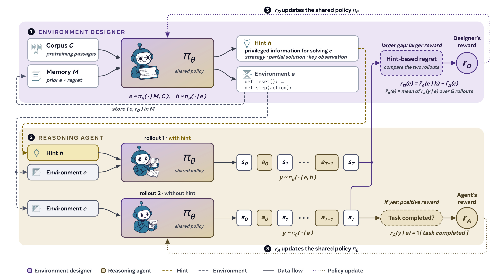
Figure 3 将一轮信号流画成了上下两层。上层中，语料库 $C$ 提供“这轮可以设计什么”的外部主题，记忆 $M$ 提供“过去哪些环境有遗憾、太易或太难”的历史，共同经过设计器策略产生环境与提示。下层对同一环境进行有提示与无提示的独立播放，它们的差值回到设计器，任务是否完成则回到求解器。图中两条更新虚线都指向同一个 $\pi_\theta$，这是理解 SPADE 的关键：设计器并不只生成数据，它也通过自己的回报接受梯度。同时，提示只用来估计学习边界，最终评测的 Reasoning Agent 仍然无提示完成未见任务，因而不是把测试题的解法暗中塞进推理过程。
图中还有一个容易忽略的时序：Designer 先写环境，Agent 再在该环境里交互，环境及遗憾最后才进入 memory。所以 memory 不是 Agent 解题时的外部提示，它只是下一轮环境设计的历史条件；这保留了未见评测的无记忆辅助口径，也让记忆的作用可以通过删除变体被单独观察。
2.2 共同 GRPO 更新、迟延设计器和难度锚点
两个角色的轨迹最终都用 GRPO 更新。对同一输入采样 $G$ 个响应后，论文先对组内奖励做标准化：
符号解释：$r_i$ 是第 $i$ 条轨迹的可验证回报，$G$ 是同组样本数，$\hat A_i$ 是相对于同组均值并按标准差缩放后的优势。它不在不同环境间直接比奖励尺度，而是问同一环境里哪些播放更好。实际训练中，Reasoning Agent 的回报在每个环境内标准化，Environment Designer 的回报则在同技能环境间做均值中心化，从而避免某个角色的奖励方差压制另一个角色。
核心更新是带非对称截断与 KL 项的目标：
符号解释：$x$ 是当前角色的输入，$y_i$ 是样本轨迹，$\pi_{\mathrm{old}}$ 是收集数据时的行为策略，$\pi_{\mathrm{ref}}$ 是 KL 参考策略，$\epsilon_{\mathrm{low}}$ 和 $\epsilon_{\mathrm{high}}$ 限制比率移动范围，$\beta_{\mathrm{KL}}$ 控制偏离参考模型的代价。论文用 $0.20/0.28$ 的非对称截断，给向上探索略大的空间。因为 Designer 要等 Reasoning Agent 在当前环境组上玩完 $k$ 轮后才能计算难度锚点，它的更新天然有延迟，所以还使用截断重要性采样矫正离策略漂移。
仅有提示遗憾仍可能噪声较大，因此部署的 Designer 奖励是两部分混合：权重 0.4 的截零提示遗憾，以及权重 0.6 的平顶难度锚点。对 30B 主设置，当某环境在一个训练窗口中的求解胜率处于 $[0.4,0.6]$ 时，锚点给予最高回报，超出区间则线性衰减。这使难度锚点先排除太易与太难，再让提示遗憾在可学区间内挑选最值得教的环境。这也意味着本文的核心奖励不是完全端到端“自发涌现”，而是依赖人工选定的胜率区间、混合权重和 GRPO 更新规则。
2.3 提示差分如何把环境推向能力边界
Environment Designer 的主奖励是有提示与无提示的平均回报差：
符号解释：$e$ 是当前可执行环境，$h$ 是 Designer 根据环境源码撰写的特权提示，$\bar r_A(e\mid h)$ 是 $G$ 次有提示新播放的平均回报，$\bar r_A(e)$ 是 $G$ 次无提示播放的平均回报，$r_D(e)$ 则是环境对设计器的教学价值。高遗憾表示模型在一点关键策略下可以完成、却还不能独立完成，正处于学习边界；两边都高表示已掌握；两边都低则可能连提示也救不回来，对当前模型不可学。
论文将提示解释为一个轻量级的上界策略，对应 PAIRED 中“强对手减当前求解器”的 minimax regret。附录的理想化分析令 Designer 选环境分布 $D$，Agent 选策略 $\pi$，两者收益分别为：
符号解释：$R_\pi(e)$ 是无提示期望回报，$R_\pi^h(e)$ 是有提示期望回报。在“环境数量有限且都有效”、“提示可达到无提示最优值”、“有提示行为能通过训练内化为无提示策略”等强假设下，纯策略 Nash 均衡会使每个有效环境的提示遗憾为零。这证明了奖励方向的合理性，但并不等于实际有限样本、有限算力和不完美提示下必然收敛。
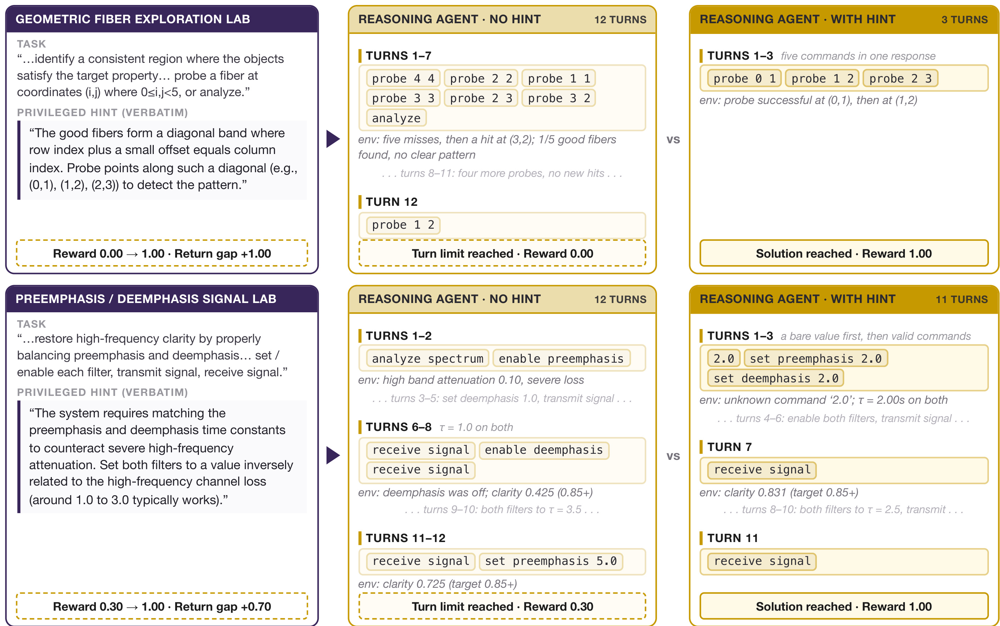
Figure 4 让“遗憾”不再只是一个差值。第一个几何纤维环境中，无提示 Agent 在十二轮内分散探测，只找到一个正例，回报为 0；提示告诉它正例落在对角带附近，但不给最终答案，Agent 在三轮内完成，单对差值为 1。第二个滤波器环境中，无提示 Agent 也会调参，但时间常数的搜索区间太广，到回合上限仍未达标；提示把搜索缩到合理范围，尽管中间还出现无效命令，最终仍可完成。因此提示的作用是显示“求解器缺的是可内化策略，不是根本能力”。要注意，图中是单对轨迹，真正训练奖励用两组新播放的均值；两边还使用独立随机种子，所以差值中既有提示作用，也不可避免地有环境采样噪声。
另一个关键细节是提示由 Designer 在读取环境源码后另行生成，Agent 始终看不到源码。这使提示能抓住隐藏机制，却也带来 Designer 通过提示人为放大差值的风险，因而禁止直接泄露精确答案和加入难度锚点都是必要的约束。真正的核心信号仍必须来自 Agent 在可执行环境中实际得到的回报。
2.4 语料库、环境记忆与可执行性质检
双角色循环如果只吃自己的输出，就会受到论文所谓的“不可见绳索”限制：生成器只会重组已经偏好的模式。SPADE 每轮抽取新的预训练语料文档作为外部锚点。Games 设置使用 1 万篇数学与 5000 篇科学文档，来自 DCLM 和 MegaScience；工具调用设置使用 1.5 万篇 Nemotron 预训练代码文档。这些文档不是直接变成问答对，而是提供主题、规则或 API 素材，再由 Designer 写成含隐藏状态和验证逻辑的环境。
语料库负责“广度”，记忆则负责“相对当前 Agent 的难度”。记忆保存过去环境、遗憾分数和技能标签，向新一轮提供高遗憾的可变形种子，也提供太易或太难的反例，避免设计器每轮从零开始。论文设置 200 条的先入先出上限，每次重生成时旧环境池整体被替换，因此不是无限累加固定题。
可执行不等于可学。所有候选先通过语法检查、类实例化、reset() 以及若干 step() 冒烟测试，失败时最多再生成五次。工具调用环境更严格：它必须给出 OpenAI function-calling 风格的模拟工具、工具可修改的后端状态、三到五条依次到达的用户指令和每条成功条件；除了确定性 reset 门检查多个随机种子下的成功条件是否能运行，还用 LLM 筛查是否存在某个工具链能够达成每个条件。这些门检缩小了奖励黑客和不可解环境的空间，但它们只是对“有效环境集”的工程近似，并不能替代对长程行为和验证器漏洞的全面安全审计。
3. 实验结果
3.1 训练配方、域设置与评测边界
主实验在 Qwen3-4B-Instruct-2507、Qwen3-8B 和 Qwen3-30B-A3B-Instruct-2507 三个骨干上运行，每个 games 设置都训练 400 个 rollout 步，每步 24 个环境，每环境无提示组大小为 16。Games 从数学推理、逻辑演绎、空间推理、模式识别、优化和因果推断六类技能中轮换三类，每四步替换一次环境池。工具调用环境生成更贵，因此每八步替换。评测集都不向 Designer 暴露：Games 检查 AIME 2025/2026、GPQA-Diamond、LiveCodeBench-v6 和四类 Reasoning-Gym；工具侧检查 BFCL v4 multi-turn、$\tau^2$-bench 和 ACEBench-Agent。
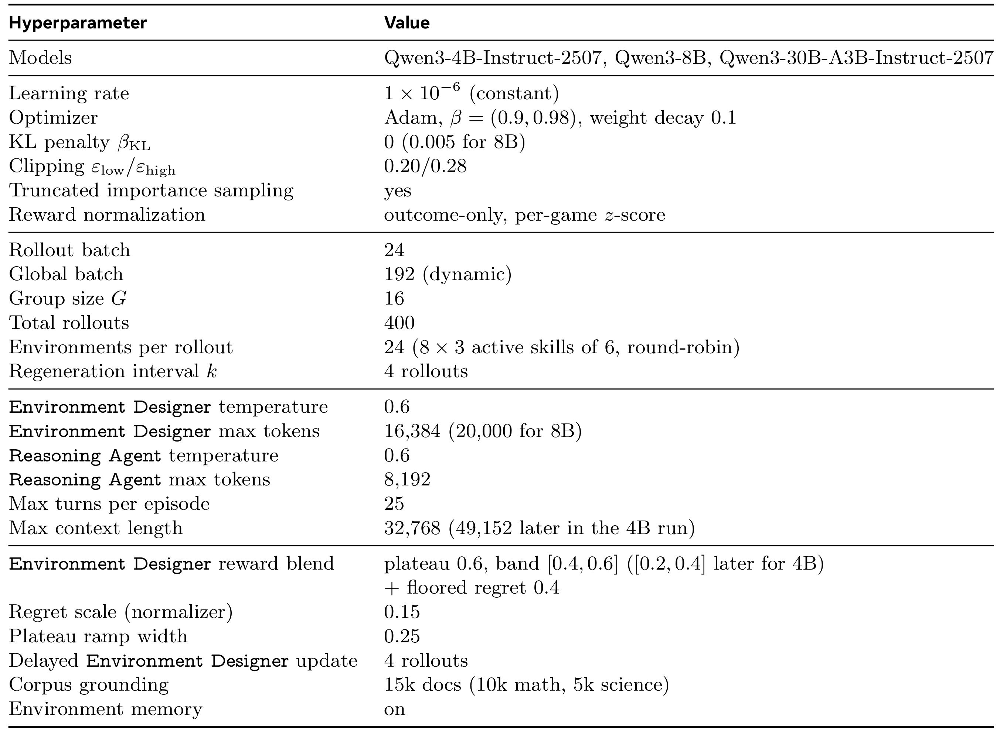
Table 5 把“自动生成环境”背后的成本具体化了。学习率固定为 $10^{-6}$，全局 batch 为 192，每环境组 16 条播放，Designer 最长可生成 16,384 tokens，Reasoning Agent 最长 8192 tokens，环境上下文最长 32,768，每回合最多 25 步。换言之，SPADE 的开放性不是“免费的数据增强”：每次生成都需要长代码输出、多轮执行、无提示与有提示两套播放以及代码验证。表中还显示了一些模型特例，例如 8B 设置使用 0.005 的 KL 惩罚且 Designer 上限扩到 20,000 tokens，4B 后期调整上下文和难度带。这些例外说明论文虽给出共享配方，但并非所有尺寸都完全零调参迁移；复现时应保留每个运行的配置文件、生成失败率和实际 token 成本，而不能只对照一个总步数。
3.2 Games 主结果：迁移到未见数学、科学、代码与程序推理
固定环境对照包括在静态 GPT-5.5 生成环境上训练的 GRPO，以及在官方 RLVE 集合上按原配方重训的 Fixed-env RLVE。三个骨干均从同一未训练基座出发，对照预算为 400 步，这使得“自适应环境”与“固定环境”的主比较比较干净。论文对八个指标作等权平均，不让某一类任务以样本数差异支配总分。
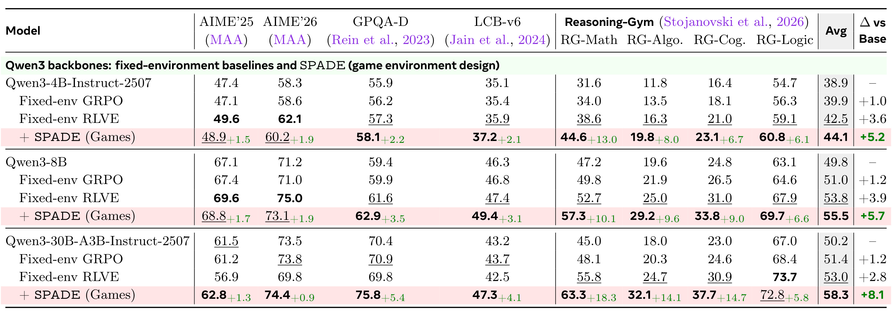
Table 1 显示，SPADE 相对同模型基座的八项平均提升随尺寸增长：4B 为 +5.2，8B 为 +5.7，30B-A3B 为 +8.1。30B-A3B 的平均分从 50.2 提高到 58.3，比同预算 Fixed-env GRPO 的 51.4 高 6.9 分，比更强的 Fixed-env RLVE 53.0 仍高 5.3 分。提升不是 AIME 竞赛数学一项拉动：AIME 2025/2026 只分别比基座高 1.3 和 0.9，更大变化来自 GPQA-Diamond +5.4、LiveCodeBench-v6 +4.1，以及 Reasoning-Gym 的 Math +18.3、Algorithmic +14.1、Cognition +14.7、Logic +5.8。这与训练环境的结构相符：环境强调分步操作、约束满足、探测和修正，所以对程序性推理的迁移比对竞赛数学的迁移更大。不过，表中使用每个变体的最佳 suite-average checkpoint，这是一种离线选点；它证明训练轨迹中存在更好模型，但不自动等价于真实部署时不看测试趋势也能选中同一检查点。
3.3 Tool use 主结果：训练结构与评测结构越接近，迁移越强
工具环境模拟一组 function-calling 工具、可被工具修改的后端状态，以及分三到五轮到达的用户指令。Reasoning Agent 必须先查找纪录、用正确参数更新状态，再根据后续指令校验或对账；只有完成全部指令才得到终局成功。这个训练形态与 ACEBench-Agent 的有状态多步任务最接近，与 BFCL multi-turn 次之，与 $\tau^2$-bench 的转移相对小一些。
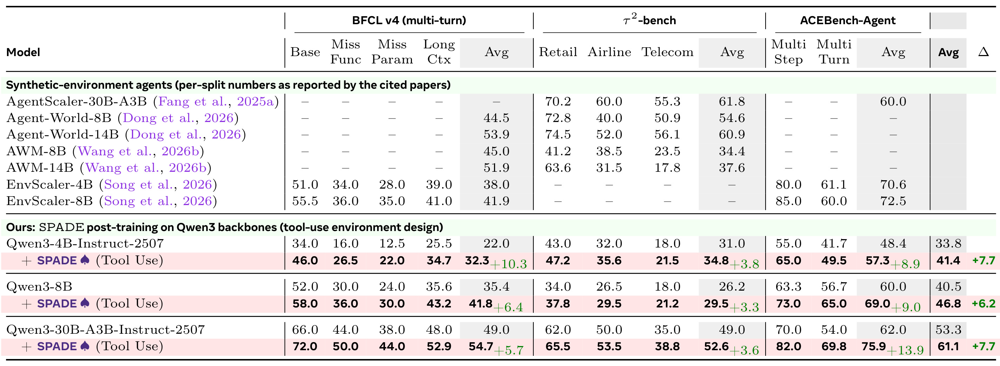
Table 2 验证了这一结构相似度假设。在 30B-A3B 上，BFCL v4 multi-turn 平均从 49.0 到 54.7，提升 5.7；$\tau^2$-bench 从 49.0 到 52.6，提升 3.6；ACEBench-Agent 从 62.0 到 75.9，提升 13.9，三组合成平均从 53.3 到 61.1，增长 7.7。4B 上的 BFCL 提升更大，达 +10.3，说明自生成环境不只服务大模型。但表的横向系统比较不是严格同配方实验：AgentScaler、Agent-World、AWM 与 EnvScaler 使用不同基座、训练数据和预算，部分还使用 BFCL v3 或不同的 $\tau^2$-bench 修正版、用户模拟器和聚合方式。因此“SPADE 在 BFCL 和 ACEBench 表格分数更高”是真实记录，但不应被扩张为排除所有训练协议差异后仍全面优越。
3.4 环境是否真的会变：可学性、多样性与代码结构
下游分数变好还不足以证明环境会适应，所以作者直接审计主 30B games 运行中生成的环境。第一个过程指标是 learnable-band share：对一个环境，如果 Reasoning Agent 胜率在 0.2 到 0.8 之间，就把它视为既不是稳赚也不是绝对无解的可学环境。
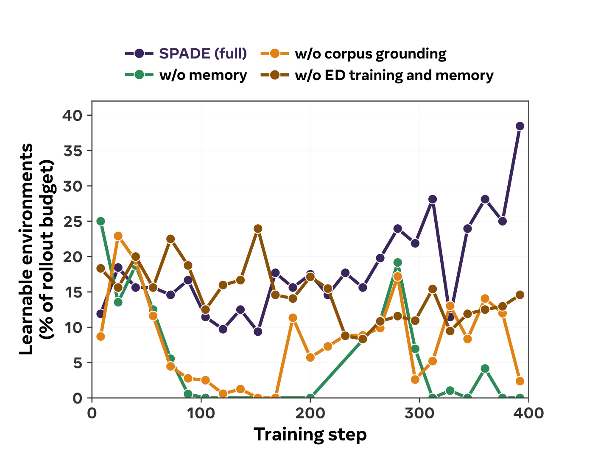
Figure 6 中完整 SPADE 的可学占比前期大多在 10%-20% 间波动，后期出现更多 20% 以上的窗口，最后接近四成；无 memory 变体在中后期长时间降到接近零，无 corpus 变体虽有偶发回升，但不能持续，冻结 Designer 且去掉 memory 的路线也没有形成稳定上升。这比仅看某一检查点更能支持“课程会移动”，但度量仍有两个边界：它按 16 步窗口聚合，且未填满的 24 个环境配额按零计入，因而同时混合了生成接受率和任务难度。附录的质量审计显示，早到晚的可学带比例从 0.16 到 0.31，而良定义性约 0.98 到 0.97、可验证终局答案约 0.90 到 0.93，说明提高难度并没有明显依靠把环境写坏。
仅跟踪难度可能让生成器在少数主题里越做越难，因此第二个问题是多样性是否同时保持。作者用 SBERT 嵌入环境文本，并用归一化相似度矩阵的特征值定义 Vendi Score：
符号解释：$K$ 是嵌入的余弦相似度矩阵，$\lambda_i$ 是 $K/n$ 的归一化特征值，指数化的特征谱熵可理解为“有效不同样本数”。完全相同的 24 个环境得 1，单一领域批次约 14.8-16.5，混合整个运行的批次约 21.3，这给分数一个可解释标尺。
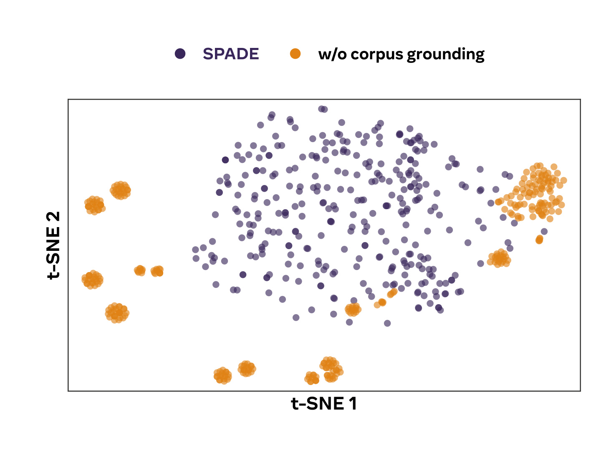
Figure 7 的 t-SNE 中，完整 SPADE 的紫色点在投影空间里形成连续且宽广的支撑，无 corpus 的橙色点则聚成若干孤立小岛，对应生成器反复绕着少数程序模式变形。投影本身不能作为定量证明，t-SNE 会扭曲全局距离，所以论文把主要结论绑定在校准后的 Vendi/n：完整 SPADE 为 0.68，无 corpus 仅 0.04。这个对比说明“线上训练 Designer”本身不会凭空产生知识广度，它需要每轮重新接入外部文档。作者还用 TF-IDF/LSA 的纯词汇嵌入重做分析，结论一致，降低了“只是 SBERT 表示偏差”的可能。
环境的难度变化还可以在代码和开场观察里直接看到。论文固定了生成指令，并每步重新抽语料文档，因而随训练出现的系统性变化不容易被解释为 prompt 人工升级。
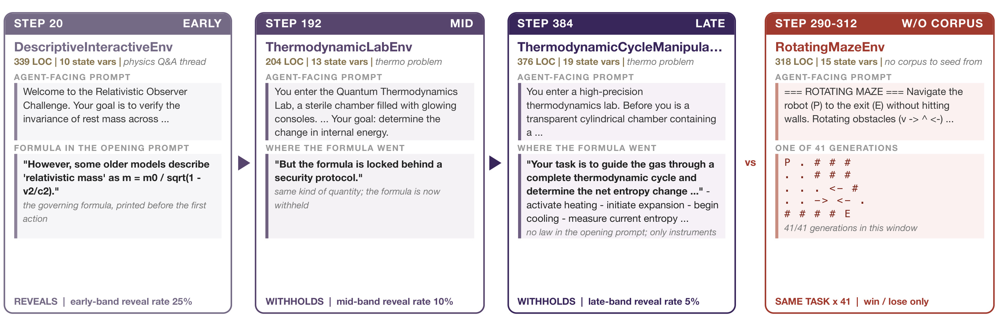
Figure 8 的三个紫色卡片来自同一 30B 运行。第 20 步环境直接在开场观察中给出“相对论质量”公式，代入与操作空间都较窄；到第 192 步，环境告诉 Agent 公式被安全协议锁住，需要先与仪器交互；到第 384 步，开场只给目标和可操作仪器，需要完成加热、膨胀、冷却和测量后再推断。物理环境把支配公式明示在开场的比例从早期 25% 降到晚期 5%；每环境的不同奖励层级从 3.7 增到 5.8，严格部分奖励层级从 2.2 增到 4.0。右侧红卡则显示无 corpus 变体在 290-312 步间连续 41 次生成同一 RotatingMazeEnv，且只有输赢奖励。这一对照把“外部语料供给广度、Designer 训练推高难度”的分工具体化了。
3.5 消融：自适应、记忆、语料库和奖励各自负责什么
主消融在同一 Qwen3-30B-A3B-Instruct-2507 games 设置上比较完整 SPADE、去记忆、去语料根植、同时冻结 Designer 且去记忆，以及由固定 GPT-5.5 设计环境的控制。每个变体依据八项平均选择最佳检查点，所以这里比的是各自训练轨迹中可达到的最佳水平。
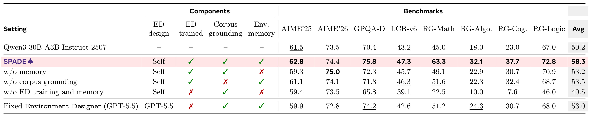
Table 3 中完整 SPADE 平均 58.3；去记忆后降到 53.2，去语料根植降到 53.5，说明两者任务不同却都影响最终迁移。更重要的是，冻结自博弈 Designer 并去掉记忆时，平均只有 40.5，比未训练基座 50.2 低 9.7；换成固定 GPT-5.5 Designer，保留语料库和记忆，可恢复到 53.0，却只获得完整 SPADE 相对基座 +8.1 增益的约 35%，且 LiveCodeBench-v6 为 42.6，低于未训练基座 43.2。这支持“环境要随 Agent 共同适应”，但也应看到控制不是每次只改一个变量：最差变体同时冻结 Designer 并删掉 memory，GPT-5.5 变体还更换了设计器模型，因而它们证明完整配置优越，却不能独立定量“Designer 梯度”本身的净因果效应。
语料库对多样性的影响还做了样本数校准的独立对比，避免把运行长度不同误当成多样性不同。
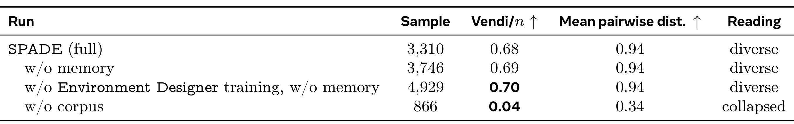
Table 8 显示，完整 SPADE 的 3310 个环境样本 Vendi/n 为 0.68、平均成对距离 0.94；去 memory 后两项为 0.69 和 0.94；冻结 Designer 且去 memory，只要仍有 corpus，甚至是 0.70 和 0.94。只有去 corpus 时，Vendi/n 崩到 0.04，成对距离降到 0.34。因而 Designer 训练和 memory 并不是主题多样性的主来源，它们更像难度与历史控制；外部语料才负责把环境操作的内容支撑在宽分布上。这一结论对“完全封闭自提升”是一个重要修正：SPADE 能自适应地更新环境难度，却仍系统性地消费人类预训练语料作为新颖性来源。表中静态环境池因生成协议不同被排除，这是正确的可比性选择，也意味着这个表回答的是“在线生成变体内谁保持多样性”，而不是对所有静态数据库做普遍排名。
奖励消融将提示遗憾与一个更便宜的 EMA learning-potential 信号比较。对技能 $s$ 和评分轮 $t$，先跟踪求解平均回报：
符号解释：$\gamma$ 是新观测权重，$\mu_t^\gamma(s)$ 是该技能的指数移动平均。快慢两个平均中，最终奖励实际只使用慢基线：
符号解释：$E_s$ 是这轮属于技能 $s$ 的环境集，$\rho(e)$ 是单环境相对慢基线的绝对偏差，$r_D^{\mathrm{LP}}$ 是再减去同技能平均后的 Designer 奖励。它的问题是绝对值会同时奖励“永远解出”和“永远解不出”的环境，且必须先积累历史才有意义。实验中它把八项平均从 50.2 提高到 55.9，获得完整提示遗憾 +8.1 增益的约 70%，但低于 58.3。这说明“训练 Designer”比奖励细节更关键，但当可承受另一组提示播放成本时，当前策略上的提示差分能更直接地锁定可学边界。
3.6 尺度、课程宽度与跨模型族外推
在共享训练配方下，更大模型从自适应环境获得更大增益，而同预算 Fixed-env GRPO 在三个尺寸上都只提高约 1.0-1.2 分。论文的解释是，大模型更快拟合固定池，因此更需要会移动的训练分布。六技能课程的最佳平均 58.3，缩到两类技能时为 53.7，说明增益不是单一游戏家族驱动。
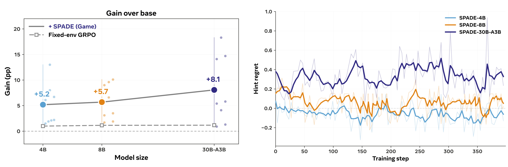
Figure 12 左图用大点给出八项平均增益，4B、8B、30B-A3B 依次是 +5.2、+5.7、+8.1，灰色 Fixed-env GRPO 几乎水平。右图同时暴露了一个不应被头条结论遮住的问题：只有 30B-A3B 的经平滑提示遗憾大多时间保持为正，4B 与 8B 在长时间段会跌到零以下。理想最优提示不应降低期望回报，但当前有限样本模型可能误解、过度依赖或被提示误导，两个随机播放组的有限样本均值也会反转差值。更小模型尽管仍获得下游改进，却不能说 Designer 的遗憾估计已经稳定。跨模型族方面，Nemotron-30B-A3B-BF16 的四个 Reasoning-Gym 类别都高于未训练基座，Cognition +9.6、Algorithmic +9.3、Math +2.6、Logic +3.2；但它没有评 AIME、GPQA 和 LiveCodeBench，所以只能作为“训练动力不完全限于 Qwen”的支持，不是完整跨族对照。
4. 总结
4.1 我的判断
SPADE 最扎实的贡献是把“生成数据”推进到“生成并执行完整 MDP”，并让生成方本身接受来自求解边界的在线奖励。实验证据链相对完整：三个 Qwen3 尺寸均高于基座和匹配预算固定环境对照；工具任务上提升与训练结构相似度一致；可学带、公式隐藏、奖励粒度和多样性分析表明环境分布确实在改变；组件消融又显示完整共适应配置优于冻结 Designer。对 Agent 后训练而言，最值得迁移的不是某个具体游戏，而是三个可分开设计的控制面：外部语料定宽度，历史记忆定难度，对照播放定可学性。
4.2 局限与风险
- 开放性仍受基座模型和外部语料限制。 Designer 不可能稳定写出超过自身表达与上下文能力的环境，而多样性消融明确显示无 corpus 会崩溃，所以它并非无外部信息的封闭自我提升。
- 理论保证建立在强理想假设上。 提示必须达到最优无提示值，提示行为还必须能被内化；实际小模型出现负遗憾，说明提示质量与采样噪声会破坏理想情形。
- 成本与稳定性负担很高。 每轮要生成长 Python 环境、验证代码、做两组多次播放，还需要迟延 Designer 更新和重要性矫正；论文报告了超参，但没有用统一金额或 GPU-hours 给出端到端成本对比。
- 评测仍是固定基准。 论文证明未见任务上的分数提高，却还没有一个长期开放性指标可以区分“真正持续能力生长”与“对当前基准广泛迁移”。
- 工具系统的横向结论受协议差异影响。 BFCL 版本、$\tau^2$-bench 变体、用户模拟器、聚合方式、基座模型与训练预算都不完全一致，因而更适合视为广泛参考，不是严格统一 leaderboard。
4.3 复现与后续跟进
- 先复现“无语料”与“无记忆”的分离消融。 同时记录生成接受率、Vendi、可学带比例和下游分数，才能检验“语料管广度、记忆管难度”是否在新代码库中仍成立。
- 跟踪提示质量与负遗憾来源。 对 4B/8B 保存成对轨迹，区分提示误导、随机 reset 难度差异、播放方差和模型未能遵循提示，才能判断是否应用配对随机种子、更多播放或提示质检来降低噪声。
- 建立成本对等的固定池强基线。 不只对齐训练步，还要对齐生成 tokens、环境执行次数、验证器调用和总计算量，以回答增益究竟来自自适应还是额外计算。
- 把环境安全审计纳入课程。 目前门检主要验语法、可执行性和工具成功条件；后续应检查隐藏网络访问、资源消耗、状态泄漏、验证器奖励黑客和恶意工具组合，否则更强 Designer 会同时扩大环境的攻击面。
综合来看，SPADE 已经给出一个可执行的共适应环境训练闭环，但它更准确的定位应是“将环境设计变成后训练中的一个可学组件”，而不是已经实现无限、无人干预的自我改进。